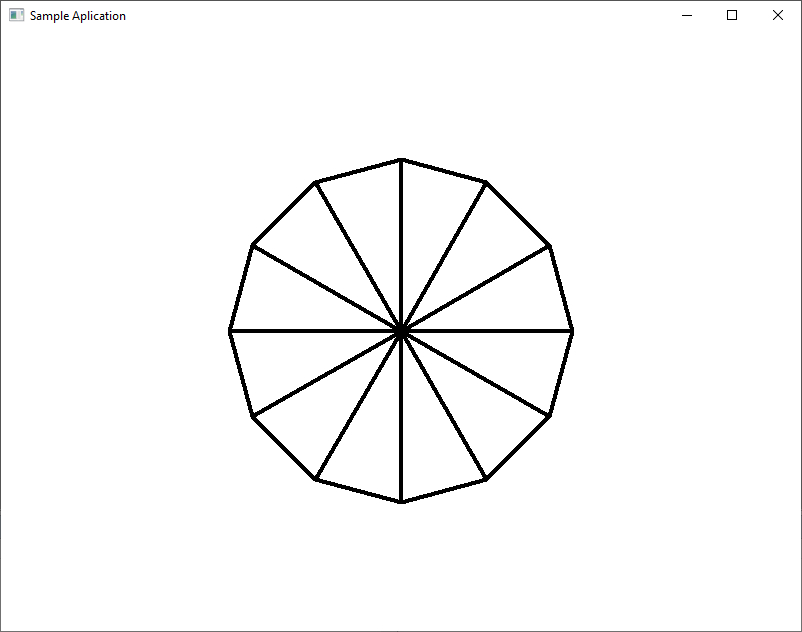

Загрузить архив с примерами ЗДЕСЬ.
Параметрическое уравнение окружности выглядит так:
for ( i = 0 ; i < 360; i+=dl )
{
x = center.x + radius * cosf(i);
y = center.y + radius * sinf(i);
}
Код примера можно загрузить /src/01.022-draw_circle/Circle_parametric_equation.
Окружность из треугольников исходный код примера можно загрузить /src/01.022-draw_circle/Circle_Triangle.
Построить окружность из треугольников можно используя следующий код:
#include <windows.h>
#include <math.h>
HWND hWnd;
struct vector3
{
float x,y,z;
};
#define PI 3.1415926535897932384626433f
//кол-во треугольников
#define Cnt 12
//кол-во вертексов
//равно 12 частей + 1 и + 1 вершина в центре
#define VertCnt 14
//кол-во индексов
#define IndCnt 36
vector3 vert_buff[VertCnt];
vector3 vert_buff_transformed[VertCnt];
unsigned int index_buff[IndCnt];
void Init_Circle()
{
float dl = PI * 2.0f / (float)Cnt;
for (int i=0; i < VertCnt - 1; i++ )
{
float angle = i * dl;
vert_buff[i].x = 4.0f * sinf(angle);
vert_buff[i].y = 4.0f * cosf(angle);
vert_buff[i].z = 0.0f;
}
vert_buff[VertCnt - 1].x = 0.0f;
vert_buff[VertCnt - 1].y = 0.0f;
vert_buff[VertCnt - 1].z = 0.0f;
for ( int i=0; i < Cnt; i++ )
{
index_buff[i*3+0]=VertCnt - 1;
index_buff[i*3+1]=i;
index_buff[i*3+2]=i+1;
}
}
void Draw_Circle()
{
RECT rc;
GetClientRect(hWnd, &rc);
for ( int i = 0; i < VertCnt; i++ )
{
vector3 v = vert_buff[i];
v.z += 5.0f;
v.x = v.x / v.z;
v.y = v.y / v.z;
v.x = v.x / (float(rc.right) / float(rc.bottom));
v.x = v.x * float(rc.right) / 2.0f + float(rc.right) / 2.0f;
v.y =-v.y * float(rc.bottom) / 2.0f + float(rc.bottom) / 2.0f;
vert_buff_transformed[i] = v;
}
HDC hDC = GetDC(hWnd);
HPEN hPen = CreatePen(PS_SOLID, 4, RGB(255, 0, 0));
HPEN hOldPen = (HPEN) SelectObject(hDC, hPen);
for ( int i = 0; i < Cnt; i++ )
{
int indx = index_buff[ i * 3];
vector3 v1 = vert_buff_transformed[ indx ];
vector3 v2 = vert_buff_transformed[ index_buff[ i * 3 + 1] ];
vector3 v3 = vert_buff_transformed[ index_buff[ i * 3 + 2] ];
MoveToEx(hDC, (int)v1.x, (int)v1.y, NULL);
LineTo(hDC, (int)v2.x, (int)v2.y);
LineTo(hDC, (int)v3.x, (int)v3.y);
LineTo(hDC, (int)v1.x, (int)v1.y);
}
SelectObject(hDC, hOldPen);
DeleteObject(hPen);
ReleaseDC(hWnd, hDC);
}
LRESULT CALLBACK WndProc(HWND hWnd,
UINT uMsg,
WPARAM wParam,
LPARAM lParam)
{
switch(uMsg)
{
case WM_CLOSE:
PostQuitMessage(0);
break;
default:
return DefWindowProc(hWnd, uMsg, wParam, lParam);
}
return 0;
}
int PASCAL WinMain(HINSTANCE hInstance,
HINSTANCE hPrevInstance,
LPSTR lpCmdLine,
int nCmdShow)
{
UNREFERENCED_PARAMETER(hPrevInstance);
UNREFERENCED_PARAMETER(lpCmdLine);
WNDCLASS wcl;
wcl.style = CS_HREDRAW | CS_VREDRAW;
wcl.lpfnWndProc = WndProc;
wcl.cbClsExtra = 0L;
wcl.cbWndExtra = 0L;
wcl.hInstance = hInstance;
wcl.hIcon = LoadIcon(NULL, IDI_APPLICATION);
wcl.hCursor = LoadCursor(NULL, IDC_ARROW);
wcl.hbrBackground = (HBRUSH)(COLOR_WINDOW+1);
wcl.lpszMenuName = NULL;
wcl.lpszClassName = "Sample";
if(!RegisterClass(&wcl))
return 0;
hWnd = CreateWindow("Sample", "Sample Application",
WS_OVERLAPPEDWINDOW,
0, 0,
640, 480,
NULL,
NULL,
hInstance,
NULL);
if(!hWnd)
return 0;
ShowWindow(hWnd, nCmdShow);
UpdateWindow(hWnd);
Init_Circle();
MSG msg;
while(true)
{
if(PeekMessage(&msg, NULL, 0, 0, PM_REMOVE))
{
if(msg.message == WM_QUIT)
break;
TranslateMessage(&msg);
DispatchMessage(&msg);
}
if(GetKeyState(VK_ESCAPE) & 0xFF00)
break;
Draw_Circle();
}
DestroyWindow(hWnd);
UnregisterClass(wcl.lpszClassName, wcl.hInstance);
return (int)msg.wParam;
}